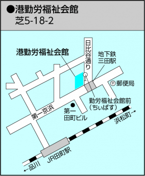

社交ダンスとは
社交ダンスは、ヨーロッパの宮廷を発祥とするペアダンスです。その名のとおり社交を目的とするためのダンスで、新しい人との出会いや交流を広げるための手段として、パーティーなどで踊られます。欧米ではボールルームダンスと呼ばれ、普通の人々の生活にとけ込み親しまれています。
日本では明治時代に外交政策として取り入れられ、戦後に広く普及しました。初心者でも簡単に踊れるパーティー向けのダンスに加えて、近年ではスポーツ的な要素が取り込まれた「競技ダンス」として注目を集めており、技術を競い合う競技会（コンペ）が盛んに開催されています。競技ダンスは、テレビや漫画など各種メディアで取り上げられブームとなっています。
すぐに習得できて誰でも楽しめるパーティーダンスから技術を磨いて競い合う競技ダンスまで、社交ダンスはすその広さと奥行きの深さが特徴です。生涯スポーツとして、小中高生から大学生、社会人、高齢者まで幅広い年齢層が楽しんでいます。
これからダンスをはじめたい人へ
社交ダンスは、気軽にはじめられて新しい仲間が沢山できるとても楽しい趣味です。私たちのクラブは初心者のためのダンスサークルです。ダンス未経験の新しい会員を歓迎します。少しでも気になった方は、一度、見学にいらしてください。
スケジュール
２０１６年９月より毎週金曜日夜の活動を目指しています。
活動予定場所
港区 勤労福祉会館
東京都のJR田町駅、地下鉄 三田駅まじかの港区勤労福祉会館で主に活動しています。お仕事帰りに気軽に立ち寄れる交通の便の大変良い場所です。
アクセス
最新情報
公式LINE